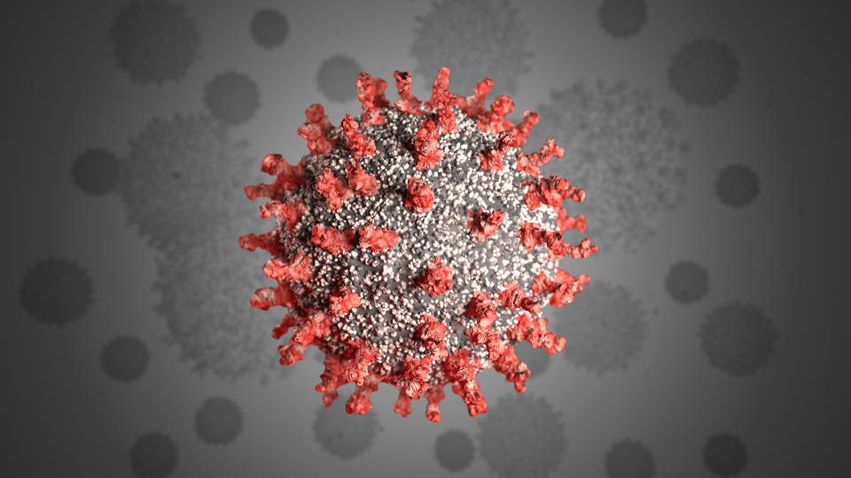
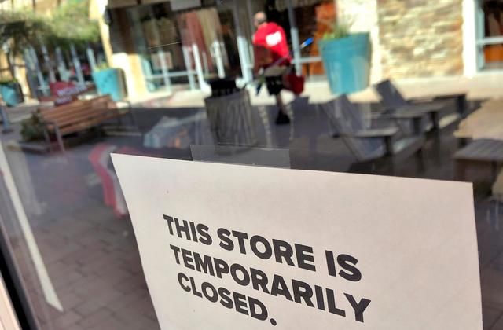

Releasing these prisoners during this crisis is not just an act of mercy to
protect prisoners' health, and the health of the prison staff. Fewer sick
inmates means less strain on the already burdened prison hospital system.
The system was ill equipped to provide proper care to the elderly and sick
even before this crisis. A 2016 report from the Department of Justice found
that 17 percent of medical positions in prison hospitals were unfilled, and
that 12 Bureau of Prisons facilities were so understaffed that they were at
"crisis level." Releasing high-risk inmates will free up limited resources
within the prison health care system to better treat those who remain.
- The New York Times
1 / 3

Covid-19
2 / 3

Prisoners
3 / 3

Prisoners Affected